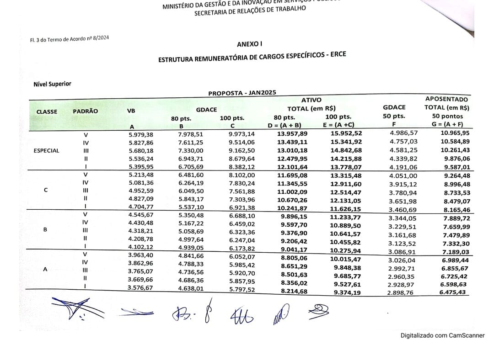

SINAEG
Na quinta-feira 04/07, o Sindicato Nacional dos Arquitetos, Economistas, Engenheiros, Estatísticos e Geólogos do Poder Executivo Federal (SINAEG) oficializou um novo acordo com o Governo, representando um passo significativo nas negociações.
Em uma cerimônia, representantes sindicais e autoridades do Ministério da Gestão e Inovação em Serviço Público (MGI) formalizaram o aditivo ao Termo de Acordo nº 8, um marco alcançado em conjunto com as confederações de servidores públicos, a Confederação dos Trabalhadores no Serviço Público Federal (Condsef), parceira nas negociações, e a Confederação Nacional dos Servidores Públicos do Brasil (CSPB), que o SINAEG é filiado.
A proposta apresentada pelo Governo foi aceita e aprovada pela maioria dos presentes em assembleia realizada na quinta-feira, 27/06, por meio de plataforma online. Com a assinatura do aditivo ao Termo de Acordo nº 8, não apenas os servidores da ERCE, como também os do PGPE e PECs setoriais receberão um reajuste salarial em duas parcelas, a primeira em janeiro de 2025 e a segunda em abril de 2026.
VEJA AQUI A TABELA DA ERCE.

Críticas ao Acordo Refletem Expectativas Não Atendidas
Apesar de celebrado como um avanço pela base e Direção Executiva do SINAEG, o acordo não escapou das críticas da categoria. Na terça-feira (3/07), na reunião onde as entidades sindicais apresentaram sua resposta de aceitação do acordo, estas incluíram posicionamentos contundentes sobre as condições dos termos, expressando descontentamento quanto ao reajuste salarial proposto, que consideram aquém das expectativas dos servidores.A proposta apresentada pelo Governo foi aceita e aprovada pela maioria dos presentes em assembleia realizada na quinta-feira, 27/06, por meio de plataforma online. A nova tabela salarial retoma valores comparativos aproximados aos de carreiras similares, tal como era em 2010, ano de criação da ERCE - Estrutura dos Cargos Específicos pela Lei 12.277. Embora aprovada como grande vitória parcial, também foi recebida com cautela pela base do SINAEG que segue exigindo a reestruturação da carreira.
Apesar das divergências, tanto o SINAEG quanto o Governo firmaram o compromisso de seguir o diálogo para discutir a reestruturação e a transversalidade das carreiras. O Sindicato permanece vigilante em suas negociações, buscando sempre o melhor para seus filiados e reiterando seu compromisso com a valorização profissional.
Compromisso de Diálogo Futuro e Busca por Melhorias
O desfecho dessas negociações permanece em aberto, com a expectativa de que novos entendimentos possam ser alcançados para beneficiar toda a categoria. Como assinala o presidente do SINAEG, Flauzino Antunes Neto: "É crucial que o governo mantenha o compromisso de iniciar um diálogo sobre a reestruturação e a transversalidade das carreiras. Esperamos que cumpram sua parte e estejam abertos para continuarmos esse diálogo."Reafirmando seu compromisso com a equiparação e valorização das carreiras de infraestrutura e desenvolvimento econômico, Flauzino enfatizou: "É fundamental que os servidores da ERCE sejam reconhecidos de acordo com suas funções específicas, evitando qualquer equívoco ao classificá-los erroneamente como servidores de suporte administrativo."
#SINAEG #ERCE #ValorizaçãoDoServidor #ReajusteSalarial #ServiçoPúblico #VitóriaDosServidores